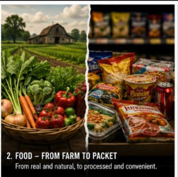
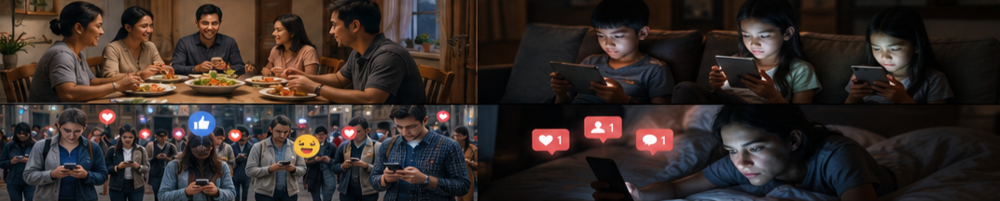

The Silent Shift
Introduction
Life moves fast. One day you're reminiscing about childhood summers filled with
vibrant colors,
backyard games, and face-to-face laughter, and the next you're scrolling through an
endless feed while your dinner comes from a packet. Over the decades, the world
has undergone a profound, often unnoticed transformation. What we eat, how we connect,
how we raise families, and even how we perceive reality have all shifted dramatically.
Technology promised progress, but it came with trade-offs. Politics feels more distant
and unaccountable. Culture—through music and screens—shapes minds in ways our grandparents
could scarcely imagine. This isn't just nostalgia; it's an observation of how far,
we've drifted from the "real world."
The Fading of Color and Sensory Richness
Remember when life felt more vivid? Neighborhoods had brighter hues—hand-painted signs, blooming gardens, and clothes that popped with personality. Today, it sometimes feels like color has drained away. Many modern environments lean toward minimalist grays, sleek glass, and digital blues from screens. Urban planning prioritizes efficiency over charm, and our attention is pulled inward to glowing rectangles rather than the world outside.
This isn't just aesthetic. It reflects a broader sensory shift. We spend less time outdoors touching grass, smelling rain, or watching sunsets without a filter. The result? A subtle dulling of everyday wonder.
Food-From Farm To Packet

Our grandparents grew or knew exactly where their food came from. Meals were seasonal, colorful, and often labor-intensive. Today, food has been industrialized: ultra-processed options dominate shelves, engineered for shelf life and craveability rather than nutrition. Portion sizes ballooned, ingredients lists grew longer with unrecognizable names, and "convenience" became king.
Advantages: Global supply chains mean we can eat strawberries in winter and access diverse cuisines.
Disadvantages: Rising health
issues—obesity, diabetes, gut problems—linked to these changes. Many feel disconnected from the rhythms of nature and the satisfaction of preparing real food. Home cooking is declining as people reach for apps and delivery.
The Machine Age – Promises and Pitfalls

Inventions transformed everything. Washing machines, cars, computers, smartphones, and AI tools freed up time and boosted productivity. Travel is faster, information is instant, and many dangerous manual jobs disappeared.
Yet the disadvantages are equally real:
Isolation through convenience: Machines that connect us (phones) often replace deeper human contact.
Job displacement and skill loss: Entire professions vanished, leaving people to adapt or struggle.
Dependency: What happens when the grid goes down or an app fails?
We've gained efficiency but lost some resilience and hands-on mastery.
Family Life and Raising Children – New Challenges

Starting a family feels harder than ever. Housing costs, dual-income necessities, delayed milestones, and economic pressures make it a calculated decision rather than a natural progression. Once children arrive, the environment has changed dramatically. Playgrounds compete with tablets. Schools emphasize screens. Parents juggle work notifications while trying to be present.
Kids today "grow on screens." Educational apps, YouTube, and gaming provide stimulation and learning opportunities, but they also correlate with attention issues, reduced physical activity, and social skill gaps. Oral conversations—those rich, unfiltered exchanges at dinner tables—have been replaced by parallel scrolling. Eye contact and storytelling are losing ground to emojis and short videos.
The Social Media and Mobile Phone Takeover
People are more "connected" than ever, yet loneliness statistics keep climbing. Phones are always in hand—during meals, walks, even conversations. Real-world interactions feel secondary. Social media feeds our minds 24/7 with curated highlights, outrage, and comparison, shaping thoughts, insecurities, and worldviews.
Music has played its part too. Genres evolved to reflect (and amplify) modern anxieties, escapism, or hedonism. Lyrics and beats can inspire, but they can also normalize detachment or materialism, steering collective thoughts in new directions.
Politics – Distant and Above the Law?
Public trust has eroded. Politicians increasingly seem like a separate class—insulated by power, money, and media spin. Scandals that once ended careers now barely register. Laws sometimes feel applied unevenly, reinforcing the sense that "rules are for thee, not for me." Social media amplifies division and performative politics while real governance happens behind closed doors.
Reclaiming What Matters
These shifts didn't happen overnight, and not all are negative. We've gained knowledge, mobility, and opportunities previous generations couldn't dream of. But we've also traded presence for distraction, depth for breadth, and community for convenience.
The good news? Awareness is the first step. Small choices matter: put the phone down for dinner, cook a real meal, take kids outside without devices, demand better from leaders, and seek music and media that uplift rather than numb. Life hasn't disappeared—it’s just waiting for us to look up and re-engage with it.
Call to Action
What changes have you noticed in your own life? Share in the comments. Let's start a conversation (a real one) about balancing progress with humanity.
Latest Posts
About
This is my learning blog built with GitHub Pages.